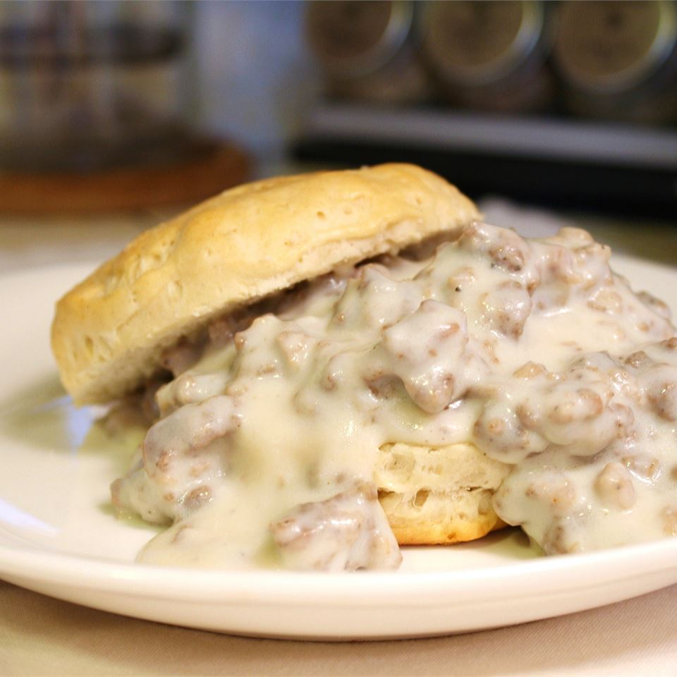

Biscuits and Gravy

Southern style biscuits with sausage gravy
Hot jumbo buttermilk biscuits with creamy sausage gravy are ready in just 15 minutes for a hearty, family-favorite breakfast
Ingredients
- (1)- 16oz can buttermilk biscuits
- 1lb pork breakfast sausage
- 1/4 cup flour
- 2 1/2 cups milk
- salt and pepper to taste
Steps
- Prepare biscuits according to package
- Cook sausage over medium heat until crumbly and fat well rendered
- Remove sausage from pan leaving behind rendered fat
- add flour and cook until raw flavor is gone, approximately 4 minutes
- slowly whisk in milk until roux turns to a loose gravy
- return sausage to gravy, mix to incorporate
- serve gravy over hot biscuits